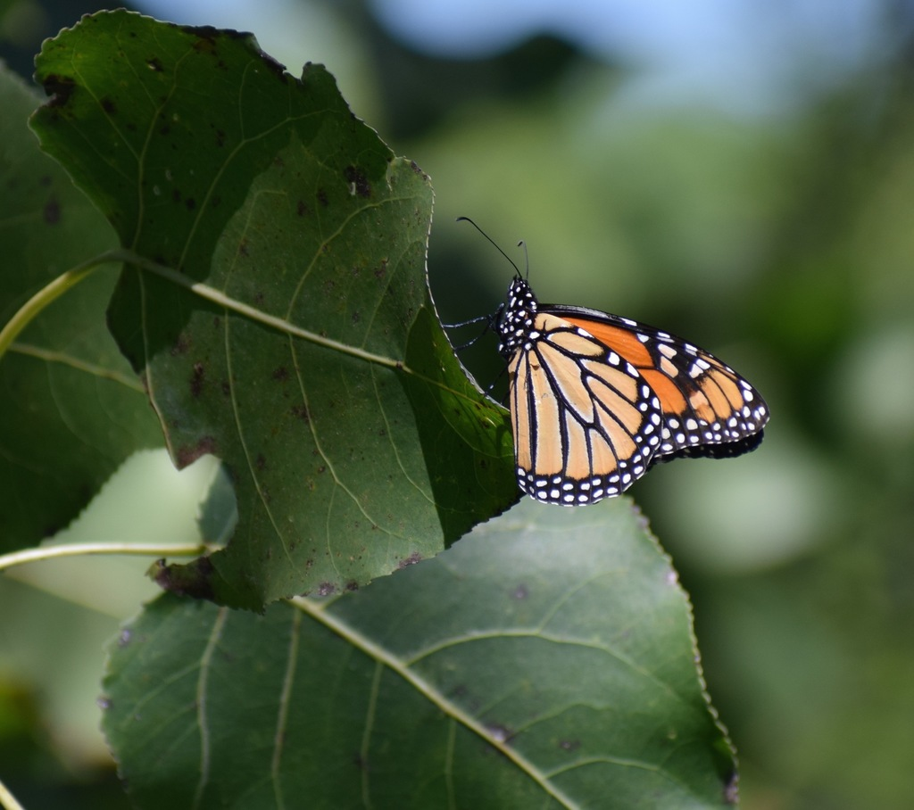
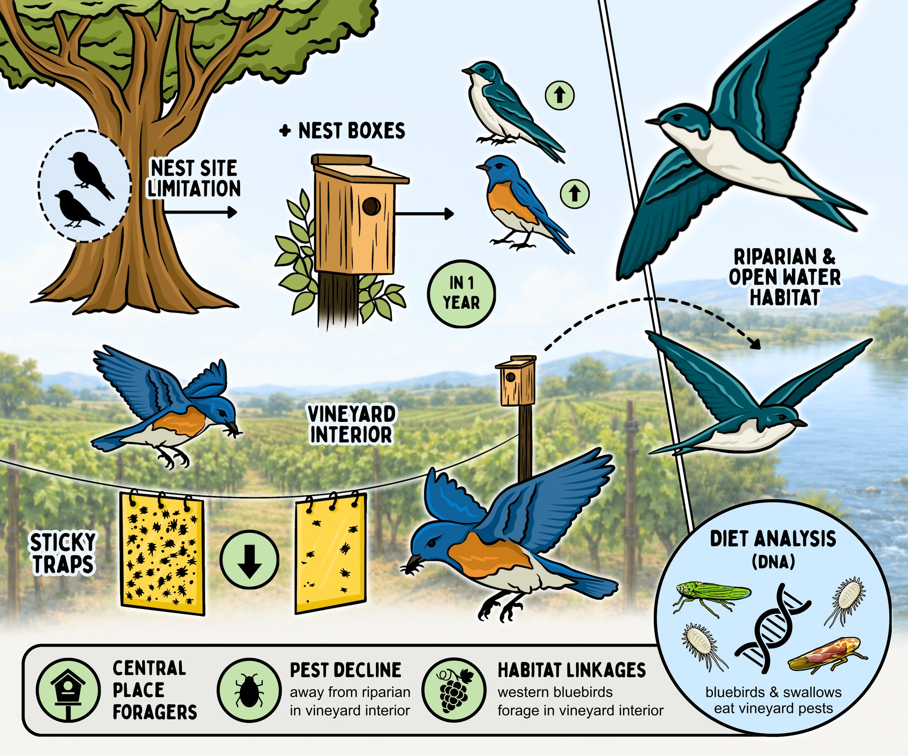
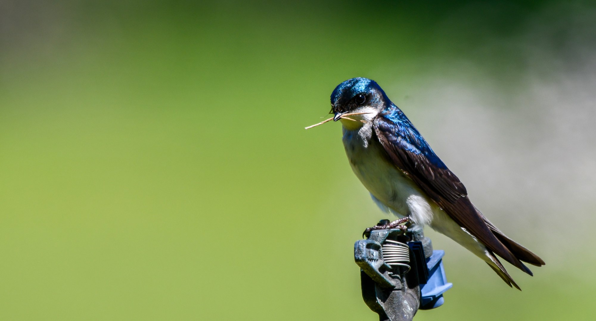
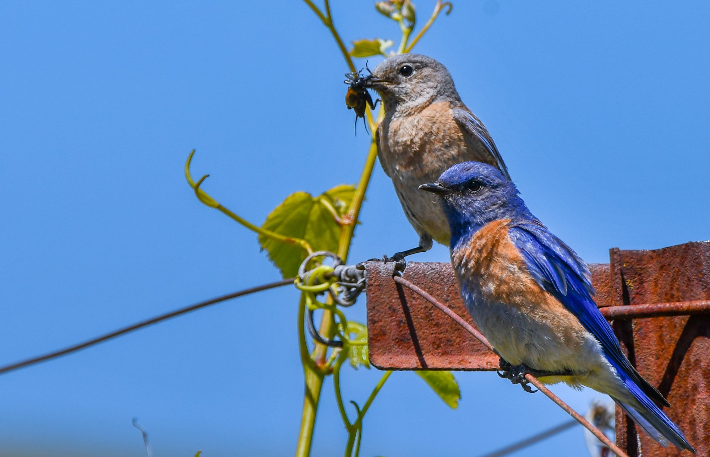

RESEARCH
Understanding variation in ecological responses to environmental change
Overarching Framework
My research broadly asks why populations and ecological communities respond differently to environmental change. To address this, I investigate how habitat management, species traits, and environmental context interact to shape animal behavior, population dynamics, and community structure across human-modified landscapes and changing climates. Ultimately, this work aims to uncover the mechanisms underlying ecological vulnerability and resilience to inform conservation in dynamic landscapes.
CURRENT RESEARCH — PHD AT TEMPLE UNIVERSITY (SEWALL CONSERVATION ECOLOGY LAB)
Climatic Extremes & Population Dynamics
As a PhD student in Biology at Temple University in the Sewall Conservation Ecology Lab, I am researching how extreme climatic events — including heat waves, cold snaps, and drought — affect populations and ecological interactions. I am particularly interested in understanding how responses to these events vary across species, populations, life stages, and environmental contexts.
My planned work includes examining the effects of climatic extremes on butterfly abundance, survival, and population dynamics, as well as investigating variation in traits and organismal responses that may help explain differences in vulnerability. More broadly, this research connects to questions about phenotypic plasticity, species traits, and the mechanisms that determine resilience to disturbance.



PREVIOUS RESEARCH — M.S. AT CAL POLY HUMBOLDT · JOHNSON HABITAT ECOLOGY LAB
Avian & Arthropod Communities in Agricultural Landscapes
My master’s research at Cal Poly Humboldt in the Johnson Habitat Ecology Lab examined how local and landscape-level habitat management shapes insectivorous bird behavior, arthropod community structure, and ecosystem services in Napa Valley vineyard agroecosystems. Combining nest box manipulations, spatial foraging tracking, DNA metabarcoding of fecal samples, arthropod sampling, and spatial analysis, I investigated how habitat features across spatial scales influence biodiversity and biological pest control.
This work demonstrated that nest site limitation constrains secondary cavity-nesting songbirds (such as Western Bluebirds and Tree Swallows), and that targeted nest box additions drive the spatial extent of avian-mediated pest control. Furthermore, my research showed how local habitat heterogeneity and surrounding uncultivated habitat support beneficial arthropod communities and maintain key trophic interactions in agricultural landscapes.
Project Overview & Graphical Abstract

Graphical abstract illustrating how nest site limitation and nest box installation drive songbird foraging, diet composition, and pest reduction in vineyard ecosystems (Illustration by Lauren Jackson).

